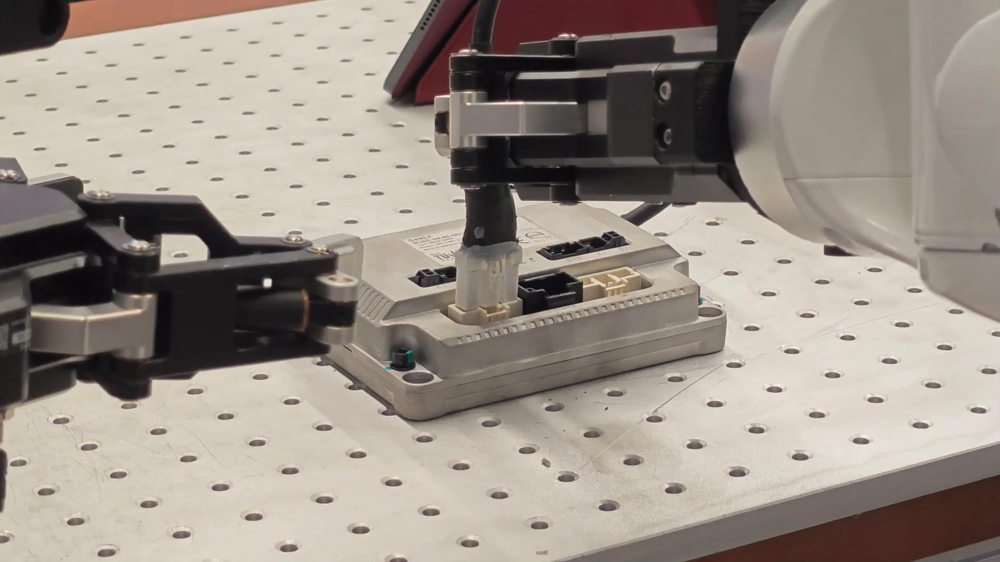
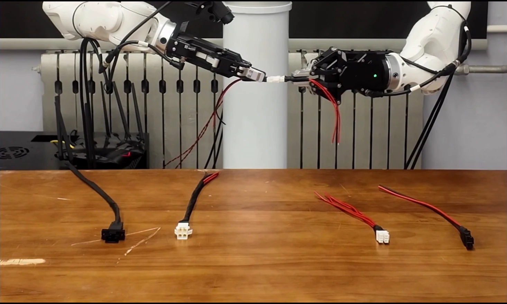
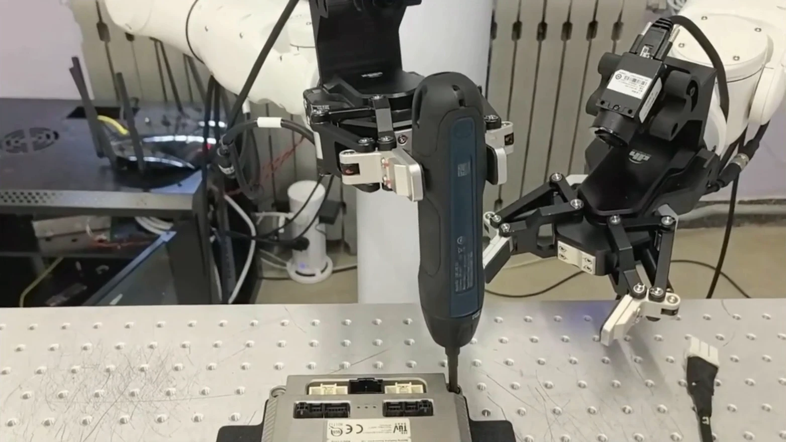

Score the demand.
Proprioceptive Precision Scoring estimates offline frame-level demand from joint motion, end-effector motion, and gripper engagement.
ROBOT LEARNING / PREPRINT 2026
Teach generalist policies when precision matters.
A training strategy for fine manipulation, with unchanged policy inference.
† Corresponding authors

01 Drive connector insertion
02 Bimanual connector mating
03 Screw tighteningTHE IDEA
Picking up a cable and inserting its connector demand very different levels of accuracy. Yet standard flow-matching objectives can give equally weighted action errors very different physical consequences.
PRISM addresses this Flow-Time Starvation by estimating precision demand from demonstrations, focusing supervision where it matters, and teaching the policy’s representations to recognize that demand.
01 / EXPERIMENTS
Real robot. Real interactions.
Explore the full three-minute demonstration.
Playback speeds are marked in the footage. Task demonstrations use PRISM inference; the PPS segment uses human VR teleoperation. Perturbation clips are qualitative examples, not a systematic robustness benchmark.
02 / METHOD
One shared precision signal.
Three complementary components.
Proprioceptive Precision Scoring estimates offline frame-level demand from joint motion, end-effector motion, and gripper engagement.
Precision-Scaled Weighting combines context-dependent demand with flow-time emphasis and an SNR-based visibility gate.
Conditional Precision Regularization encourages the VLM condition representation to encode precision demand.
Coupling a pretrained vision-language model (VLM) with a diffusion or flow-matching action expert has become the mainstream vision-language-action (VLA) paradigm for embodied policies, yet they remain unreliable once a task demands precise manipulation, e.g., submillimeter cable insertion. We attribute this weakness to a training objective that averages flow-matching errors across contexts and flow times, allocating little supervision to the few decisive moments determining task success. Along the generative path, inference integrates a locally supervised velocity field, so equally penalized errors at different flow times can affect the executed action unequally. Consequently, precision-task performance deteriorates as physical tolerance tightens by orders of magnitude. We call this supervision imbalance across contexts and flow times Flow-Time Starvation. The remedy is to jointly align supervision allocation and representation learning with context-dependent precision demand, enabling the policy to recognize when greater precision is needed. We instantiate this precision-forcing strategy as Precision-aware Reweighting and Internalization for Skilled Manipulation (PRISM), which scores precision demand offline, strengthens flow supervision where errors are consequential and action signals are visible, and internalizes that demand in the VLM condition representation. Simulation and real-robot experiments show that PRISM preserves or improves general-task performance while raising mean end-to-end success from 38.3% to 86.7% across drive connector insertion, bimanual connector mating, and screw tightening, substantially extending the precision boundary of existing embodied policies without new sensors or observation modalities.
03 / EVALUATION
Mean end-to-end success on three real-robot tasks
20 trials per method per task; 500 demonstrations per task. The controlled comparison uses the same π₀.₅ backbone, observations, update budget, and inference schedule. Results reported in the paper.
| Method | Drive insertion | Bimanual mating | Screw tightening | Mean |
|---|---|---|---|---|
| π₀.₅ | 35 | 35 | 45 | 38.3 |
| π₀.₅ + DAgger | 65 | 60 | 70 | 65.0 |
| π₀.₅ + PRISM | 95 | 80 | 85 | 86.7 |
DAgger uses 100 additional corrective demonstrations per task.
SIMULATION
76% → 88%
Mean success across 10 tasks96.9% → 97.5%
Average across four suites04 / INSIDE THE DEMONSTRATIONS
PPS is computed offline from demonstrated trajectories. Watch the three complete examples together, with the original score overlays synchronized to robot motion.
A trajectory-derived behavioral proxy, not a direct measurement of physical tolerance.
Drive insertion · Bimanual mating · Screw tightening
05 / REFERENCE
If PRISM informs your research,
please consider citing the preprint.
@misc{yue2026prism,
title = {PRISM: Precision Forcing for Generalist
Vision-Language-Action Policies},
author = {Chenghao Yue and Peiyan Li and Hao Wang
and Lei Lv and Jiahao Chen and Huaping Liu
and Yu Luo and Yuanlong Zhang},
year = {2026},
howpublished = {Preprint},
url = {https://detimage123.github.io/PRISM/}
}